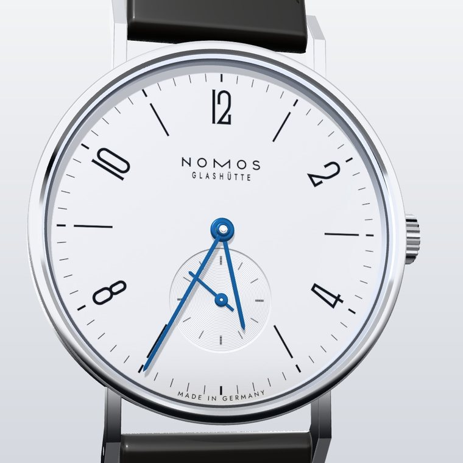
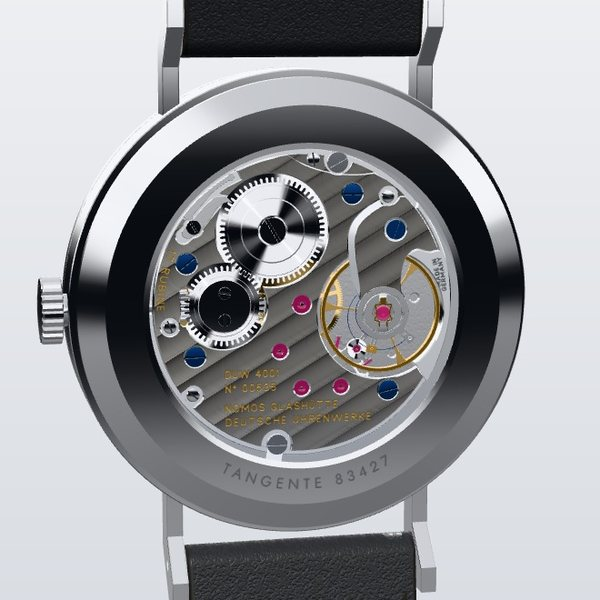
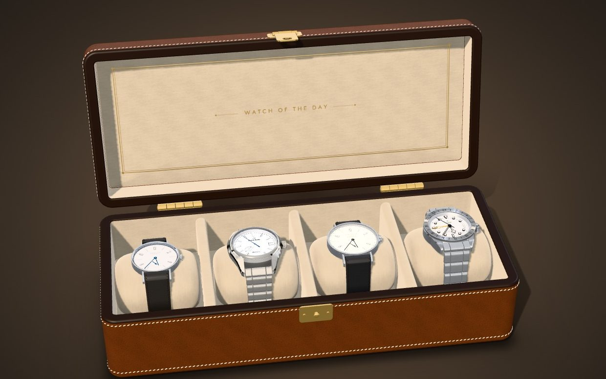
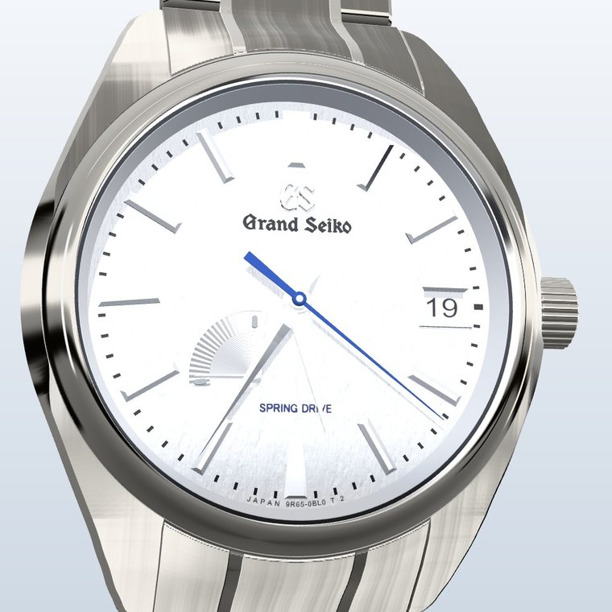
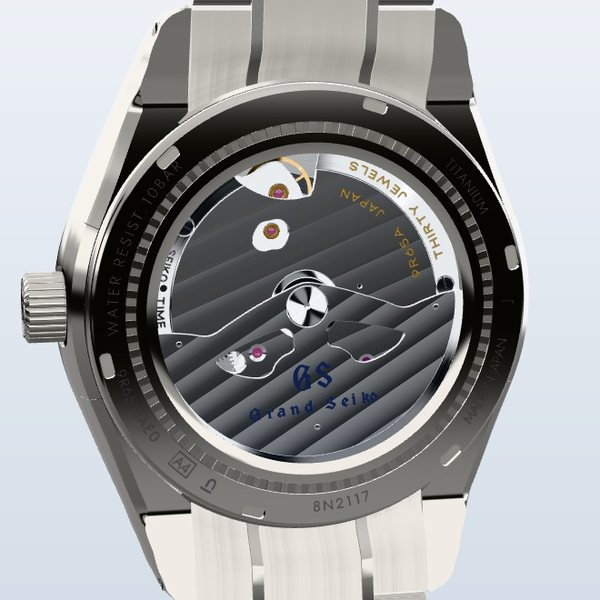
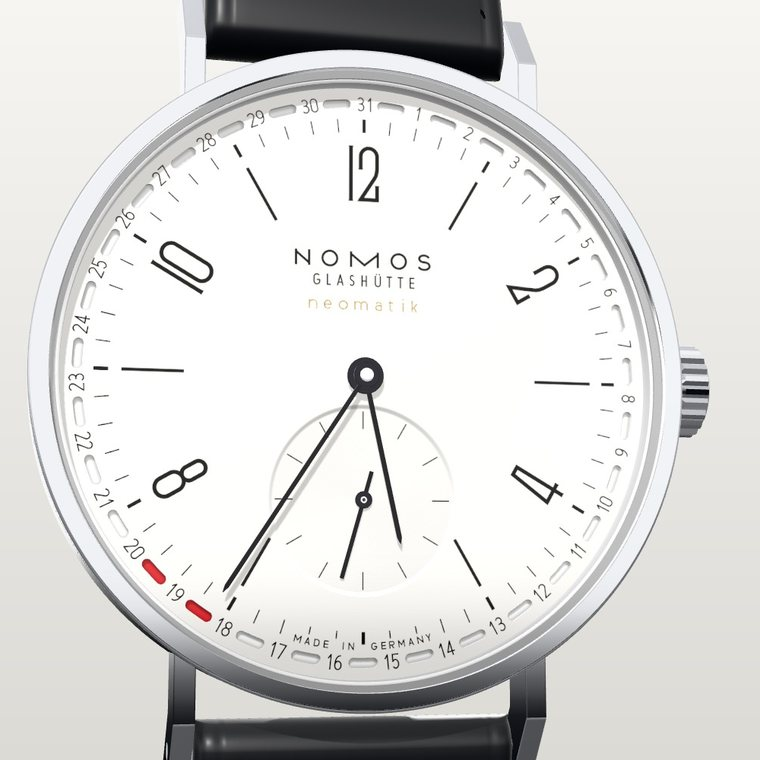
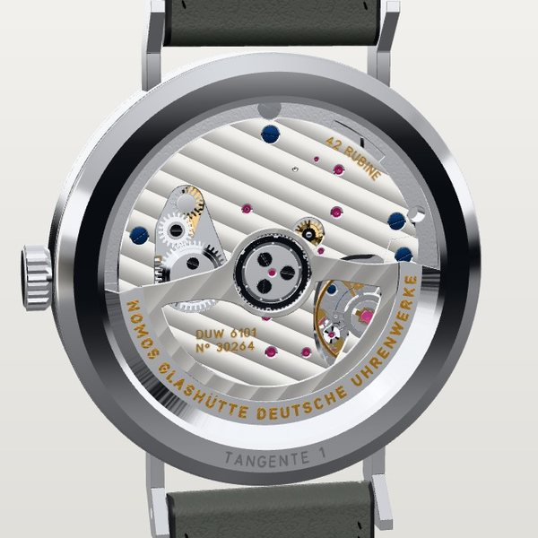
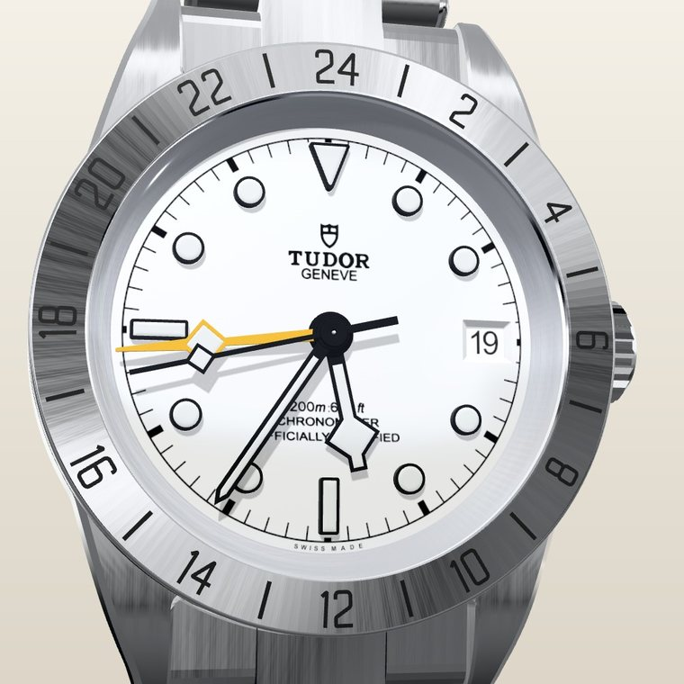
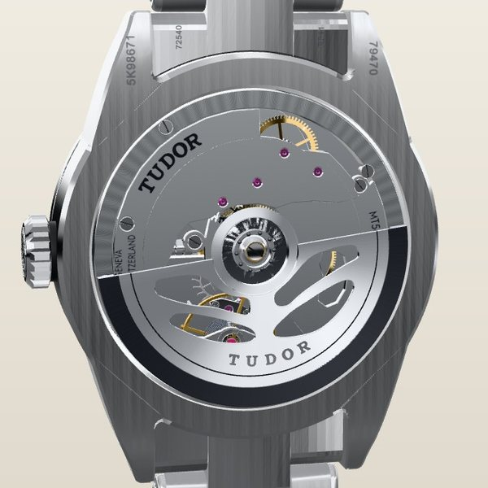
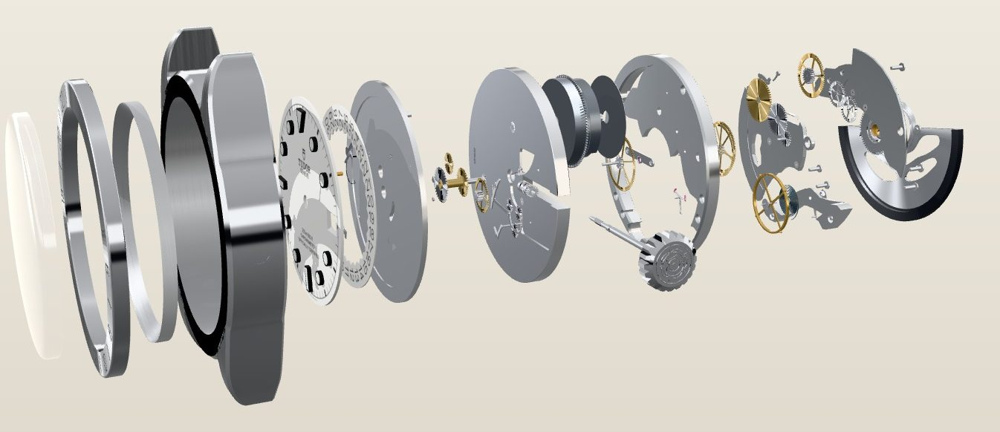

NOMOS Glashütte Tangente
ref. 139 · DUW 4001 · hand-wound, 53 h
- Tempered-blue hands on a white silver-plated dial
- Glashütte ribbing, perlage and blued screws
- Wind the crown and watch the ratchet turn
Live wallpaper · Windows & Linux
Every wheel meshes and turns at its true rate, in sync with your clock. Escapements tick beat by beat, the Spring Drive glides, rotors swing and wind the mainspring. Click the wallpaper to take control, or open the leather box to choose the watch of the day.

Built from official photos and calibre data: real tooth counts, finishes and engravings. Hover a watch (or tap Movement) to turn it over.


ref. 139 · DUW 4001 · hand-wound, 53 h


SBGA211 · 9R65 Spring Drive · 72 h


ref. 147 · DUW 6101 · automatic, 50 h


M79470-0004 · MT5652 GMT · 70 h
Explode any watch to see how it's built. Each of its 56 to 75 parts has a label, a description and live readouts.

The whole replica is one offline HTML file. It needs no server and no internet connection once it's on your computer.
with Lively Wallpaper (free)
winget install --id rocksdanister.LivelyWallpaper -ewatches-atelier-lively.zip.Clicks reach the watch only on empty desktop. To keep icons out of the way, right-click the desktop and turn off View → Show desktop icons.
Lively pauses the wallpaper behind full-screen and maximised apps, so it costs nothing while you work.
Lively sometimes starts before your monitor has woken up, and then skips the wallpaper and never retries. The guard fixes this. It's a small scheduled task that runs as you, with no admin rights and no window. After sign-in, on unlock and every 5 minutes, it puts Watch Atelier back if Lively's saved layout wants it but nothing is playing. A wallpaper you pick yourself is left alone.
Download watches-atelier-guard.zip, unzip it, and run this in that folder. Add -Remove to take it out again:
powershell -NoProfile -ExecutionPolicy Bypass -File install-guard.ps1The install script below sets the guard up automatically.
To update, delete the old tile in Lively and import the new zip.
From a clone of the repository, this script installs or updates in place and keeps your settings:
powershell -NoProfile -ExecutionPolicy Bypass -File tools\install-lively.ps1with a web-page wallpaper host
watches-atelier.html and keep it somewhere permanent, for example your home folder. Or clone the repository; the same file is at docs/wallpaper/index.html.file:///home/<you>/watches-atelier.htmlIf the wallpaper stays blank, install Qt WebEngine: sudo pacman -S qt6-webengine (Arch), sudo dnf install qt6-qtwebengine (Fedora) or sudo apt install qml6-module-qtwebengine (Debian, Ubuntu).
The hyprwinwrap plugin from hyprland-plugins pins a window as the wallpaper. Open the file in a Chromium-based browser in app mode and add the window rule from hyprwinwrap's README:
chromium --app=file:///home/<you>/watches-atelier.htmlGNOME can't use a web page as its wallpaper; its live-wallpaper extensions play videos only. You can still run the replica full screen on a workspace of its own:
chromium --kiosk file:///home/<you>/watches-atelier.htmlAny host that accepts a web address can load the hosted copy. It needs an internet connection when the wallpaper starts:
https://dk4248.github.io/watches-atelier/wallpaper/Add options to the address after #wallpaper, separated by dots. For example: watches-atelier.html#wallpaper.dial.taskbar0
| Option | Effect |
|---|---|
dial movement exploded | A fixed view instead of the cinematic loop |
w-gs-sbga211 | Start with a given watch: w-tangente-139, w-gs-sbga211, w-tangente-update-147 or w-tudor-m79470 |
idle300 idlenever | Seconds without input before returning to the wallpaper |
nolabels | Hide part labels in the wallpaper |
fps30 fps60 | Always 30 fps to save power, or never drop to 30 fps when idle |
light dark | Background colour (by default it matches the watch) |
taskbar0 taskbar36 | Space kept free for a bottom panel in pixels (default 48) |